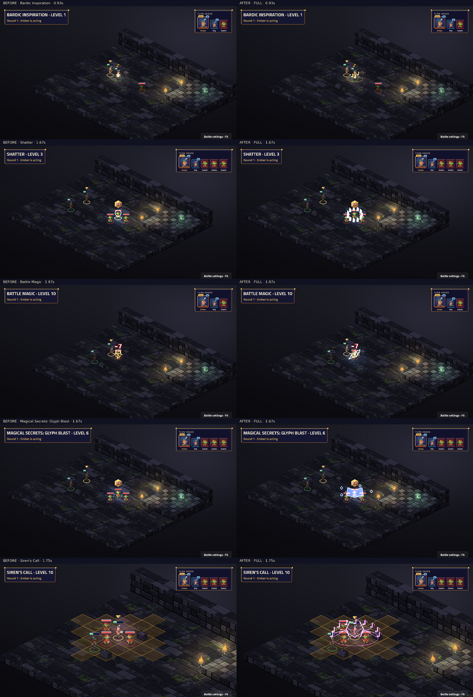

Attack · Level 1
Weapon attack, weapon range: weapon damage
Healing and inspiration · Valor, Lore and Siren · Counterspell, Silence and hypnosis
Native TV capture: before on the left, after on the right. Fixed map and seed; real engine events and BeatPlayer. Level labels are the character’s unlock level. Videos preserve the complete cast, impact, effect tails and camera settle. Posters align the impact for comparison.
Frozen before: 895e6d5ca8ca45c39a4e0a3a018a4dfc7aaac553. Review notes and limitations · Frame measurements · Actual beat timings
Complete 35-sample contact sheet · Native cast close-up

Static modifiers have no standalone proc. Every ability and visible proc must have a real fixture for this capture to succeed.
| Name | Subclass | Level | Kind | Cut-in | Before keys | After keys |
|---|---|---|---|---|---|---|
| Bardic Inspiration | Base class | 1 | ability | short | characters.buff · fx.inspire.gold | characters.bard_play · fx.bard_bardic_inspiration.gold |
| Cure Wounds | Base class | 1 | ability | short | characters.pray · fx.heal.holy | characters.bard_play · fx.bard_cure_wounds.healing |
| Dissonant Whispers | Base class | 1 | ability | short | characters.cast · fx.psychic.dread | characters.bard_verse · fx.bard_dissonant_whispers.psychic |
| Faerie Fire | Base class | 1 | ability | short | characters.summon · fx.circle.arcane | characters.bard_crescendo · fx.bard_faerie_fire.fey |
| Healing Word | Base class | 1 | ability | short | characters.pray · fx.heal.holy | characters.bard_play · fx.bard_healing_word.healing |
| Heroism | Base class | 1 | ability | short | characters.pray · fx.inspire.gold | characters.bard_play · fx.bard_heroism.gold |
| Minor Illusion | Base class | 1 | ability | none | characters.point · fx.smoke.grey | characters.bard_verse · fx.bard_minor_illusion.illusion |
| Thunderclap | Base class | 1 | ability | none | characters.slam · fx.thunder.thunder | characters.bard_play · fx.bard_thunderclap.thunder |
| Thunderwave | Base class | 1 | ability | short | characters.slam · fx.thunder.thunder | characters.bard_crescendo · fx.bard_thunderwave.thunder |
| Vicious Mockery | Base class | 1 | ability | none | characters.talk · fx.psychic.mind | characters.bard_verse · fx.bard_vicious_mockery.psychic |
| Jack Of All Trades | Base class | 2 | static | none | No art key | No art key |
| Song of Rest | Base class | 2 | ability | short | characters.pray · fx.heal.holy | characters.bard_play · fx.bard_song_of_rest.healing |
| Hold Person | Base class | 3 | ability | short | characters.cast · fx.hold.arcane | characters.bard_lore · fx.bard_hold_person.arcane |
| Lesser Restoration | Base class | 3 | ability | short | characters.pray · fx.restore.holy | characters.bard_play · fx.bard_lesser_restoration.healing |
| Shatter | Base class | 3 | ability | full | characters.summon · signature.spell_shatter.thunder | characters.bard_crescendo · fx.bard_shatter.thunder |
| Silence | Base class | 3 | ability | short | characters.summon · fx.circle.shadow | characters.bard_play · fx.bard_silence.illusion |
| Silence · OnTurnStart | Base class | 3 | proc | none | No art key | fx.bard_silence_turn.thunder |
| Dispel Magic | Base class | 5 | ability | short | characters.channel · fx.dispel.arcane | characters.bard_lore · fx.bard_dispel_magic.arcane |
| Font Of Inspiration | Base class | 5 | proc | none | No art key | fx.bard_font_of_inspiration.gold |
| Hypnotic Pattern | Base class | 5 | ability | short | characters.summon · fx.circle.arcane | characters.bard_crescendo · fx.bard_hypnotic_pattern.psychic |
| Mass Healing Word | Base class | 5 | ability | short | characters.pray · fx.heal.holy | characters.bard_crescendo · fx.bard_mass_healing_word.healing |
| Countercharm | Base class | 6 | ability | short | characters.pray · fx.inspire.charm | characters.bard_verse · fx.bard_countercharm.arcane |
| Dimension Door | Base class | 7 | ability | short | characters.cast · fx.misty.fey | characters.bard_lore · fx.bard_dimension_door.arcane |
| Greater Invisibility | Base class | 7 | ability | short | characters.buff · fx.misty.fey | characters.bard_play · fx.bard_greater_invisibility.illusion |
| Greater Restoration | Base class | 9 | ability | short | characters.pray · fx.restore.holy | characters.bard_play · fx.bard_greater_restoration.healing |
| Hold Monster | Base class | 9 | ability | short | characters.cast · fx.hold.arcane | characters.bard_lore · fx.bard_hold_monster.arcane |
| Arcane Scholar | bard.lore | 3 | static | none | No art key | No art key |
| Cutting Words | bard.lore | 3 | ability | none | characters.talk · signature.lore_glyph_echo.arcane | characters.bard_lore · fx.bard_cutting_words.psychic |
| Counterspell | bard.lore | 6 | ability | none | characters.point · signature.lore_glyph_echo.arcane | characters.bard_lore · fx.bard_counterspell.arcane |
| Magical Secrets: Glyph Blast | bard.lore | 6 | ability | full | characters.summon · signature.lore_glyph_echo.arcane | characters.bard_lore · fx.bard_magical_secrets.force |
| Peerless Skill | bard.lore | 10 | ability | full | characters.cast · signature.lore_glyph_echo.arcane | characters.bard_lore · fx.bard_peerless_skill.arcane |
| Alluring Verse | bard.siren | 3 | ability | full | characters.point · signature.siren_charm_song.charm | characters.bard_verse · fx.bard_alluring_verse.charm |
| Enthralling Aria | bard.siren | 6 | ability | full | characters.summon · signature.siren_charm_song.charm | characters.bard_crescendo · fx.bard_enthralling_aria.charm |
| Siren's Call | bard.siren | 10 | ability | full | characters.summon · signature.siren_charm_song.charm | characters.bard_crescendo · fx.bard_sirens_call.charm |
| Battle Readiness | bard.valor | 3 | static | none | No art key | No art key |
| Combat Inspiration | bard.valor | 3 | ability | full | characters.wave · signature.valor_war_horn.brass | characters.bard_valor · fx.bard_combat_inspiration.gold |
| Battle Magic | bard.valor | 10 | ability | full | characters.attack · signature.valor_war_horn.brass | characters.bard_valor · fx.bard_battle_magic.thunder |
Weapon attack, weapon range: weapon damage
6 tiles: target gains 1d6 + CHA modifier temporary HP; target is Inspired for 1 round
1 tile: heals 2d8 + casting modifier
Wis save, 6 tiles: 3d6 psychic; pushes target 2 tiles away; half damage on a save
6 tiles, burst 2: reveals hidden enemies (burst 2); Dex save (target is Lit for 3 rounds)
6 tiles: heals 2d4 + casting modifier
1 tile: target gains 1d6 + casting modifier temporary HP; ends fear conditions on target
Int save, 5 tiles: target gets -2 to attack rolls for 1 round
Con save, self, burst 1: 1d6 thunder
Con save, self, burst 1: 2d8 thunder; pushes target 2 tiles away; half damage on a save
Wis save, 6 tiles: 1d4 psychic; target has disadvantage on its attack rolls for 1 round
0 tiles, burst 3: heals 1d6 + CHA modifier
6 tiles: if the target is humanoid, Wis save (target is Paralysed until saved)
1 tile: ends magical, physical, poison conditions on target
Con save, 6 tiles, burst 2: 2d8 thunder; half damage on a save
6 tiles, burst 2: creates a silence zone (burst 2) for 3 rounds, ends if you lose concentration; units inside: At the start of your turn, on yourself: 2d6 thunder
Real engine zone turn-start hook.
6 tiles: ends concentration and ends zones on the aimed tile
Real OnRoundStart hook; fixture seed 7.
Wis save, 6 tiles, burst 2: target is Charmed until saved; target is Incapacitated until saved
6 tiles, all allies: heals 2d4 + casting modifier
0 tiles, burst 4: ends charm, fear conditions on target; target is Under a Countercharm for 2 rounds
8 tiles: teleports you to the aimed tile, up to 8 tiles away
1 tile: target is Invisible for 3 rounds
1 tile: ends charm, curse, fear, magical, physical, poison, sleep conditions on target
Wis save, 6 tiles: target is Paralysed until saved
College of Lore: Real reaction to Attack; fixture seed 7.
College of Lore: Real reaction to Fireball; fixture seed 7.
College of Lore: Dex save, 6 tiles, burst 2: 5d6 force; half damage on a save
College of Lore: Self: you gain 2 inspiration; you gain 2 mana
College of the Siren: Wis save, 6 tiles: 2d6 psychic; pulls target up to 2 tiles toward you; target is Charmed for 1 round; half damage on a save
College of the Siren: Wis save, 6 tiles, burst 2: 3d6 psychic; pulls target up to 2 tiles toward you; target is Slowed for 2 rounds; half damage on a save
College of the Siren: Wis save, self, burst 3: 4d8 psychic; pulls target up to 3 tiles toward you; target is Charmed for 2 rounds; target is Incapacitated for 1 round; half damage on a save
College of Valor: 6 tiles: target gets +2 AC and +2 to attack rolls and +3 weapon damage for 2 rounds
College of Valor: Weapon attack, weapon range: weapon damage; 2d6 thunder. With more than one attack, these bonuses and riders apply until the first hit; the rest are plain hits